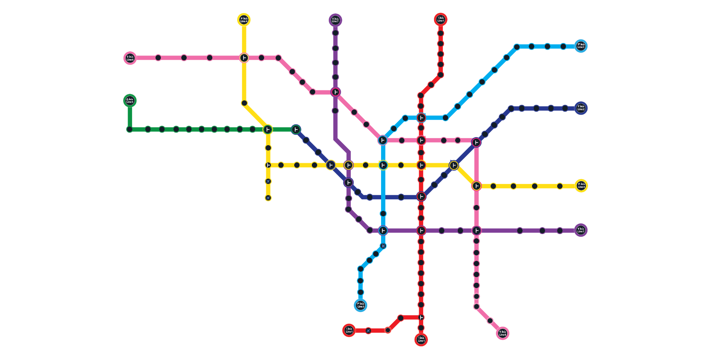

مبدا و مقصد را انتخاب کن
ایستگاه شروع و مقصد سفرت را به متروبلد بده.
مبدا و مقصدت را در متروبلد انتخاب کن؛ مسیر سفر، ایستگاه تعویض خط و ادامهٔ راه را قدمبهقدم ببین.

ایستگاه شروع و مقصد سفرت را به متروبلد بده.
اگر لازم است خط عوض کنی، محل تعویض را در مسیر پیدا کن.
قدمبهقدم از خط مبدا به مقصدت برس.